3 Visualización de datos
3.2 Primeros pasos
3.2.4 Ejercicios
- Corre
ggplot(data = millas). ¿Qué observas?
Solución

Este código crea un gráfico “vacío”. Solo se ve el fondo, pero no se dibuja nada sobre él porque no se han especificado las otras dos capas mínimas: aes() para mapear las variables y geom_*() para indicar la representación gráfica a utilizar.
- ¿Cuántas filas hay en
millas? ¿Cuántas columnas?
Solución
Para contar el número de filas y columas podemos utilizar las funciones nrow() y ncol() del paquet dplyr:
Hay 234 filas y 11 columnas en el dataset millas.
Otra manera de ver el número de filas y de columnas es imprimiendo el objeto en la consola. Al inicio nos indicará el tipo de objeto que es y sus dimensiones en términos de filas x columnas. Algo parecido ocurrirá su utilizamos str(). Si usamos glimpse() nos indicará esta información como número de obervaciones y número de variables
millas
#> # A tibble: 234 x 11
#> fabricante modelo cilindrada anio cilindros transmision traccion ciudad
#> <chr> <chr> <dbl> <int> <int> <chr> <chr> <int>
#> 1 audi a4 1.8 1999 4 auto(l5) d 18
#> 2 audi a4 1.8 1999 4 manual(m5) d 21
#> 3 audi a4 2 2008 4 manual(m6) d 20
#> 4 audi a4 2 2008 4 auto(av) d 21
#> 5 audi a4 2.8 1999 6 auto(l5) d 16
#> 6 audi a4 2.8 1999 6 manual(m5) d 18
#> # … with 228 more rows, and 3 more variables: autopista <int>,
#> # combustible <chr>, clase <chr>
str(millas)
#> tibble [234 × 11] (S3: tbl_df/tbl/data.frame)
#> $ fabricante : chr [1:234] "audi" "audi" "audi" "audi" ...
#> $ modelo : chr [1:234] "a4" "a4" "a4" "a4" ...
#> $ cilindrada : num [1:234] 1.8 1.8 2 2 2.8 2.8 3.1 1.8 1.8 2 ...
#> $ anio : int [1:234] 1999 1999 2008 2008 1999 1999 2008 1999 1999 2008 ...
#> $ cilindros : int [1:234] 4 4 4 4 6 6 6 4 4 4 ...
#> $ transmision: chr [1:234] "auto(l5)" "manual(m5)" "manual(m6)" "auto(av)" ...
#> $ traccion : chr [1:234] "d" "d" "d" "d" ...
#> $ ciudad : int [1:234] 18 21 20 21 16 18 18 18 16 20 ...
#> $ autopista : int [1:234] 29 29 31 30 26 26 27 26 25 28 ...
#> $ combustible: chr [1:234] "p" "p" "p" "p" ...
#> $ clase : chr [1:234] "compacto" "compacto" "compacto" "compacto" ...
glimpse(millas)
#> Rows: 234
#> Columns: 11
#> $ fabricante <chr> "audi", "audi", "audi", "audi", "audi", "audi", "audi", "…
#> $ modelo <chr> "a4", "a4", "a4", "a4", "a4", "a4", "a4", "a4 quattro", "…
#> $ cilindrada <dbl> 1.8, 1.8, 2.0, 2.0, 2.8, 2.8, 3.1, 1.8, 1.8, 2.0, 2.0, 2.…
#> $ anio <int> 1999, 1999, 2008, 2008, 1999, 1999, 2008, 1999, 1999, 200…
#> $ cilindros <int> 4, 4, 4, 4, 6, 6, 6, 4, 4, 4, 4, 6, 6, 6, 6, 6, 6, 8, 8, …
#> $ transmision <chr> "auto(l5)", "manual(m5)", "manual(m6)", "auto(av)", "auto…
#> $ traccion <chr> "d", "d", "d", "d", "d", "d", "d", "4", "4", "4", "4", "4…
#> $ ciudad <int> 18, 21, 20, 21, 16, 18, 18, 18, 16, 20, 19, 15, 17, 17, 1…
#> $ autopista <int> 29, 29, 31, 30, 26, 26, 27, 26, 25, 28, 27, 25, 25, 25, 2…
#> $ combustible <chr> "p", "p", "p", "p", "p", "p", "p", "p", "p", "p", "p", "p…
#> $ clase <chr> "compacto", "compacto", "compacto", "compacto", "compacto…- ¿Qué describe la variable
traccion? Lee la ayuda de?millaspara encontrar la respuesta.
Solución
traccion esa una variable categórica que clasifica los vehículos en tracción delantera, trasera o de cuatro ruedas.
- Realiza un gráfico de dispersión de
autopistaversuscilindros.
- ¿Qué sucede cuando haces un gráfico de dispersión de
claseversustraccion? ¿Por qué no es útil este gráfico?
Solución
El gráfico resultante tiene pocos puntos. Ambas variables son categóricas y por lo tanto existe una cantidad limitada de combinaciones posibles.
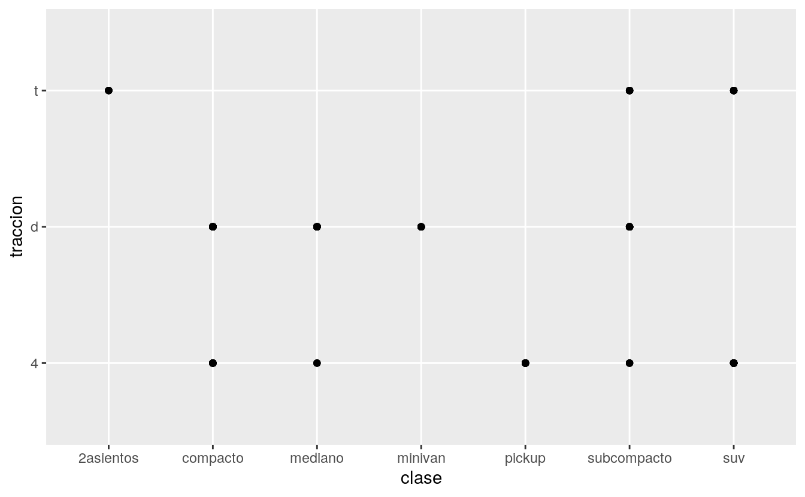
Otro problema es la frecuencia de combinaciones posibles no es la misma en todos los casos.
count(millas, traccion, clase)
#> # A tibble: 12 x 3
#> traccion clase n
#> <chr> <chr> <int>
#> 1 4 compacto 12
#> 2 4 mediano 3
#> 3 4 pickup 33
#> 4 4 subcompacto 4
#> 5 4 suv 51
#> 6 d compacto 35
#> # … with 6 more rowsLos gráficos de dispersión debieran usarse con variables continuas y cuando los valores son únicos.
3.3 Mapeos estéticos
3.3.1 Ejercicios
¿Qué no va bien en este código? ¿Por qué hay puntos que no son azules?
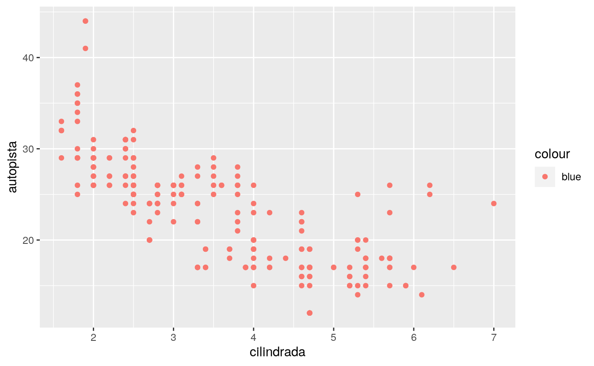
Solución
Se incluyó el color dentro de aes(), por lo cual se trata como una variable, lo cual sería útil si tuvieramos una columna con información de los colores.
Para dejar todos los puntos en color azul, se debe cambiar el orden de los parámetros.

- ¿Qué variables en
millasson categóricas? ¿Qué variables son continuas? (Sugerencia: escribe?millaspara leer la documentación de ayuda para este conjunto de datos). ¿Cómo puedes ver esta información cuando ejecutasmillas?
Solución
Variables categóricas: modelo, transmisión, tracción, combustible y clase.
Variables continuas: cilindrada, año, cilindros, ciudad, autopista.
- Asigna una variable continua a
color,size, yshape. ¿Cómo se comportan estas estéticas de manera diferente para variables categóricas y variables continuas?
Solución
Una posibilidad es graficar rendimiento de combustible en autopista dado el tipo de motor. Como información adicional usamos el rendimiento en ciudad como color, de modo de contar con una paleta de colores informativa.

Los otros casos quedan como ejercicio.
- ¿Qué ocurre si asignas o mapeas la misma variable a múltiples estéticas?
Solución
R va a generar un gráfico con información redundante, lo cual se debiera evitar.
ggplot(millas, aes(x = cilindrada, y = autopista, colour = autopista, size = autopista)) +
geom_point()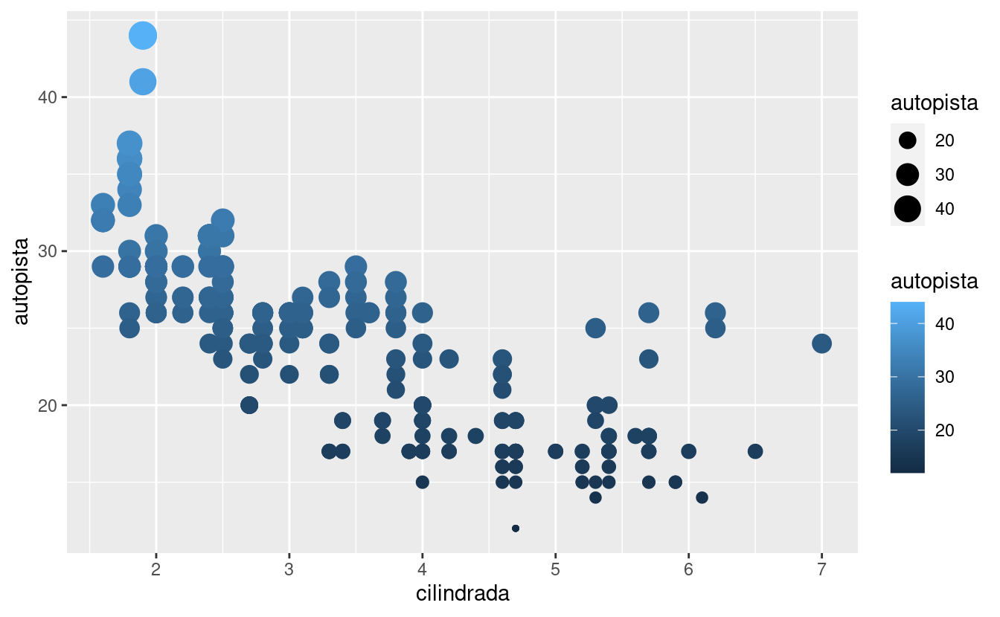
- ¿Qué hace la estética
stroke? ¿Con qué formas trabaja? (Sugerencia: consultar?geom_point)
Solución
Cambia el tamaño de los bordes de las formas 21 a 25. Para estas formas es posible cambiar el color de relleno y borde y también el tamaño de los bordes.
Ejemplo:
ggplot(mtautos, aes(peso, millas)) +
geom_point(shape = 21, colour = "black", fill = "white", size = 5, stroke = 5)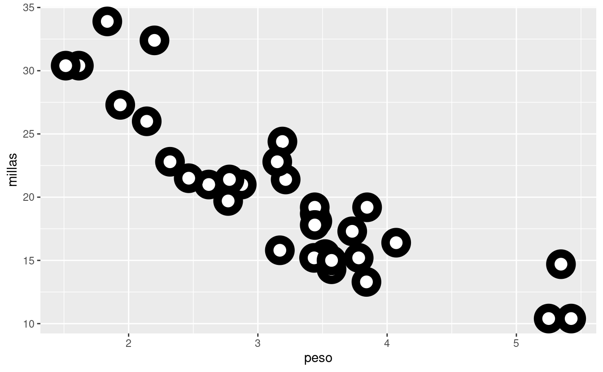
- ¿Qué ocurre si se asigna o mapea una estética a algo diferente del nombre de una variable, como ser
aes(color = cilindrada < 5)?
Solución
R crea una variable temporal que da cuenta de la evaluación de la variable. En el caso de cilindrada < 5 el resultado es verdadero o falso y según esto se incluyen los colores en el gráfico.
Ejemplo:
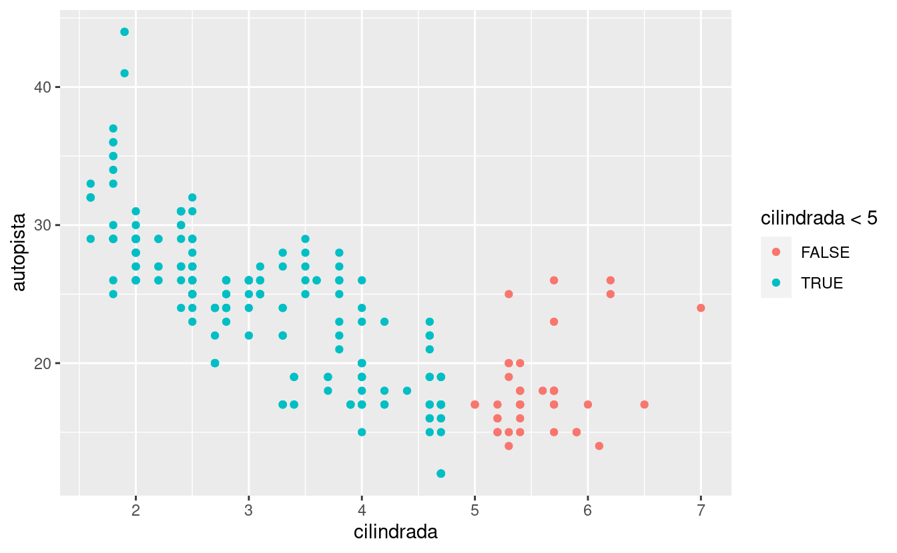
3.5 Separar en facetas
3.5.1 Ejercicios
- Qué ocurre si intentas separar en facetas a una variable continua?
Solución
Veamos un ejemplo:
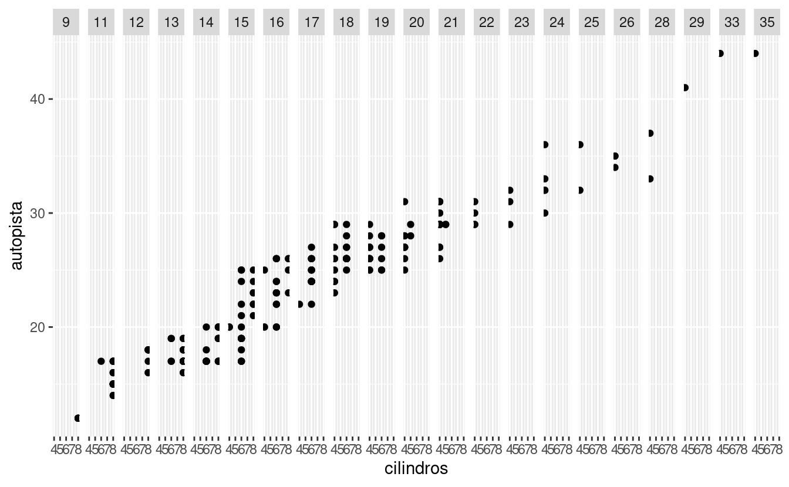
La variable continua es convertida a una variable categórica y el gráfico contiene una faceta para cada valor,
¿Qué significan las celdas vacías que aparecen en el gráfico generado usando
facet_grid(traccion ~ cilindros)? ¿Cómo se relacionan con este gráfico?
Solución
ggplot(data = millas) +
geom_point(mapping = aes(x = autopista, y = ciudad)) +
facet_grid(traccion ~ cilindros)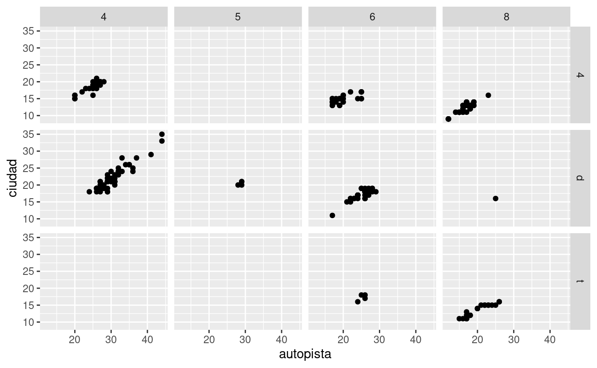
Las celdas vacías (facetas) en este gráfico corresponden a combinaciones de traccion
y cilindros que no tienen observaciones.
Son las mismas ubicaciones en el gráfico de dispersión de autopista y ciudad que no
tienen gráfica.
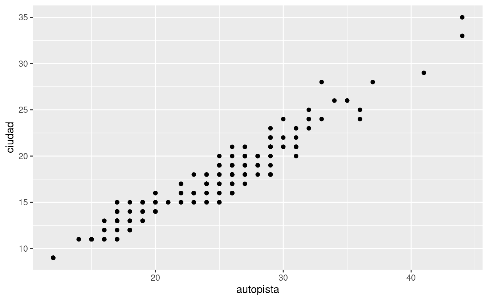
¿Qué gráfica el siguiente código? ¿Qué hace
.?
Solución
El símbolo . ignora la dimensión al momento de dibujar las facetas.
Por ejemplo, autopista ~ . divide por los valores de autopista en el eje y.
ggplot(data = millas) +
geom_point(mapping = aes(x = cilindrada, y = autopista)) +
facet_grid(traccion ~ .)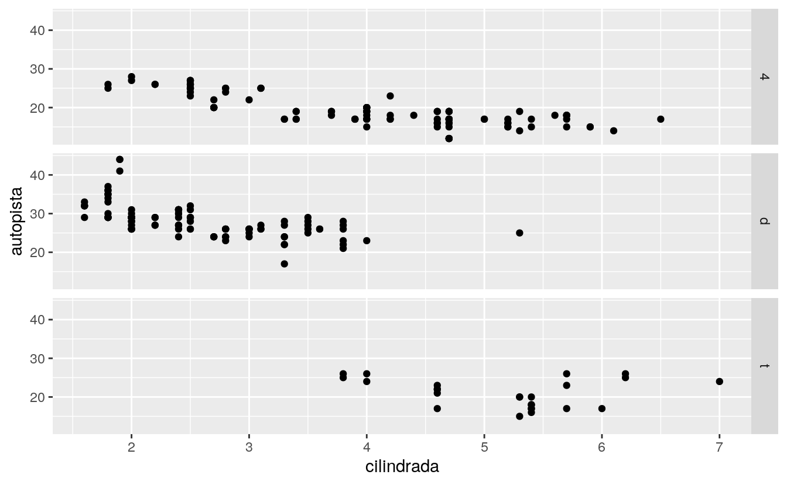
A la vez, . ~ cilindrada va a dividir por los valores de cyl en el eje x.
ggplot(data = millas) +
geom_point(mapping = aes(x = cilindrada, y = autopista)) +
facet_grid(. ~ cilindros)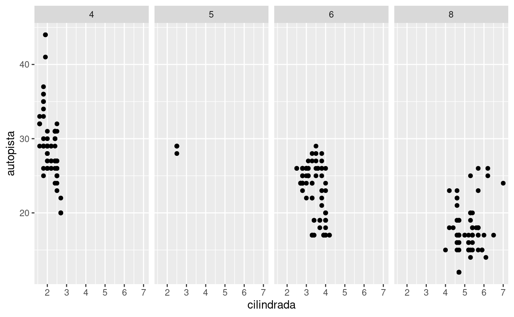
Mira de nuevo el primer gráfico en facetas presentado en esta sección:
ggplot(data = millas) + geom_point(mapping = aes(x = cilindrada, y = autopista)) + facet_wrap(~ clase, nrow = 2)¿Cuáles son las ventajas de separar en facetas en lugar de aplicar una estética de color? ¿Cuáles son las desventajas? ¿Cómo cambiaría este balance si tuvieras un conjunto de datos más grande?
Solución
En el siguiente gráfico muestra la variable clase como color.
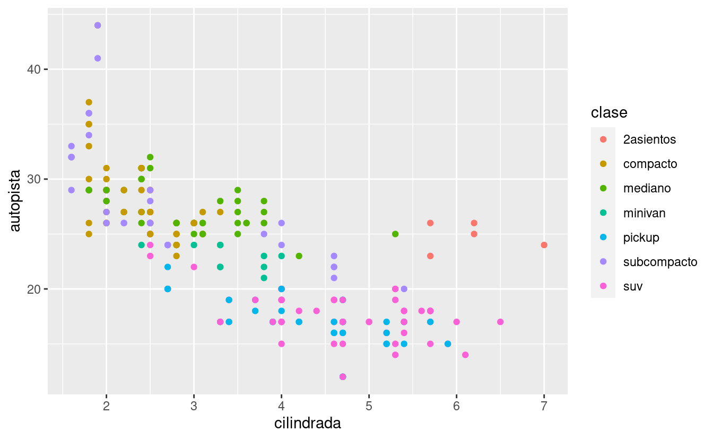
La ventaja de usar clase como parte de las facetas en lugar de un argumento de color
es la posibilidad de incluir distintas categorías.
Es difícil distinguir entre los colores de las categorías “mediano” y “minivan”.
De acuerdo a las reglas de percepción, no se debería usar más de nueve colores para mostrar información cualitativa.
Mostrar observaciones de distintas categorías en diferentes escalaes hace que sea difícil comparar directamente entre los valores de distintas categorías. Sin embargo, haría más fácil comparar la forma de la relación entre x e y en distintas categorías.
La desventaja de usar clase para las facetas en lugar del argumento de color es la dificultad
de comparar valores entre categorías dado que las observaciones para cada categoría se ubican en
distintos gráficos.
Usando las mismas escalas para los ejes x e y en todas las facetas facilita comparar observaciones
entre categorías, pero sigue siendo una comparación más compleja respecto del caso en que todas
las observaciones se ubican en el mismo gráfico.
Dado que usar clase para el argumento de color sitúa todos los puntos en un mismo gráfico, muestra
la relación incondicional entre las variables x e y, lo que no ocurre al separar en distintos gráficos.
Los beneficios de codificar una variable mediante el color son crecientes si aumenta la cantidad de observaciones o el número de categorías. Si aumenta el número de categorías puede haber superposición y resulta complejo manejar esto con argumentos de color a menos que el número de observaciones sea pequeño y se pueda usar un argumento de distorsión (jitter).
El argumento de transparencia (alpha) no funciona bien con colores ya que la combinación de colores producto de la superposición no representa adecuadamente las categorías.
Si aumenta mucho el número de categorías va a ser cada vez más difícil contar con colores distintivos y será difícil distinguirlos.
- Lee
?facet_wrap. ¿Qué hacenrow? ¿Qué hacencol? ¿Qué otras opciones controlan el diseño de los paneles individuales? ¿Por quéfacet_grid()no tiene argumentosnrowyncol?
Solución
Los argumentos nrow y ncol determinan el número de filas y columnas al momento de generar
las facetas. facet_wrap() opera sobre una única variable.
nrow y ncol no son necesarios con facet_grid ya que el número de valores únicos en la función determina el número de filas y columnas.
- Cuando usas
facet_grid(), generalmente deberías poner la variable con un mayor número de niveles únicos en las columnas. ¿Por qué?
Solución
Hacerlo genera más espacio para las columnas si el gráfico se ubica de forma horizontal.
3.6 Objetos geométricos
3.6.1 Ejercicios
- ¿Qué geom usarías para generar un gráfico de líneas? ¿Un diagrama de caja? ¿Un histograma? ¿Un gráfico de área?
Solución
- gráfico de líneas:
geom_line() - diagrama de caja:
geom_boxplot() - histograma:
geom_histogram() - gráfico de área:
geom_area()
- Ejecuta este código en tu mente y predice cómo se verá el output. Luego, ejecuta el código en R y verifica tus predicciones.
ggplot(data = millas, mapping = aes(x = cilindrada, y = autopista, color = traccion)) +
geom_point() +
geom_smooth(se = FALSE)Solución
El resultado es un diagrama de dispersión con cilindrada en el eje x, autopista en el eje y
y los puntos pintados de acuerdo a traccion.
También se incluirá una línea de tendencia, sin el error estándar, para cada grupo de traccion.
ggplot(data = millas, mapping = aes(x = cilindrada, y = autopista, colour = traccion)) +
geom_point() +
geom_smooth(se = FALSE)
#> `geom_smooth()` using method = 'loess' and formula 'y ~ x'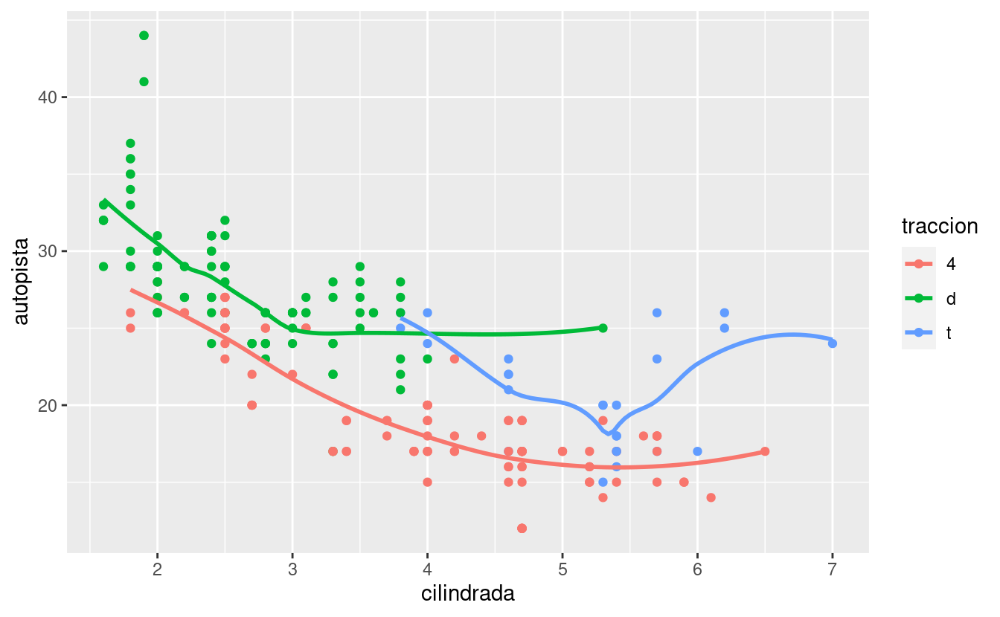
- ¿Qué muestra
show.legend = FALSE? ¿Qué pasa si lo quitas? ¿Por qué crees que lo usé antes en el capítulo?
Solución
show.legend = FALSE oculta la leyenda.
Considera el siguiente ejemplo ya visto:
ggplot(data = millas) +
geom_smooth(
mapping = aes(x = cilindrada, y = autopista, colour = traccion),
show.legend = FALSE
)
#> `geom_smooth()` using method = 'loess' and formula 'y ~ x'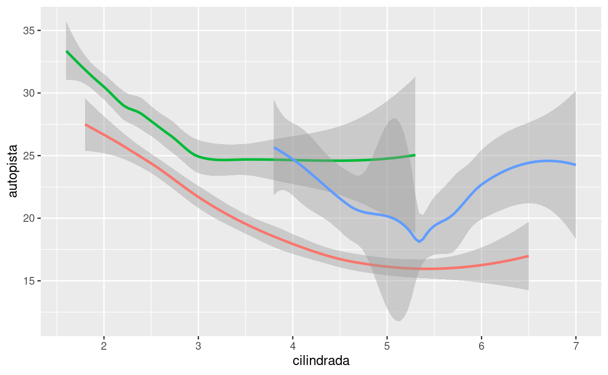
Quitar el argumento show.legend o definir show.legend = TRUE mostrará la relación entre traccion y la paleta de colores.
ggplot(data = millas) +
geom_smooth(mapping = aes(x = cilindrada, y = autopista, colour = traccion))
#> `geom_smooth()` using method = 'loess' and formula 'y ~ x'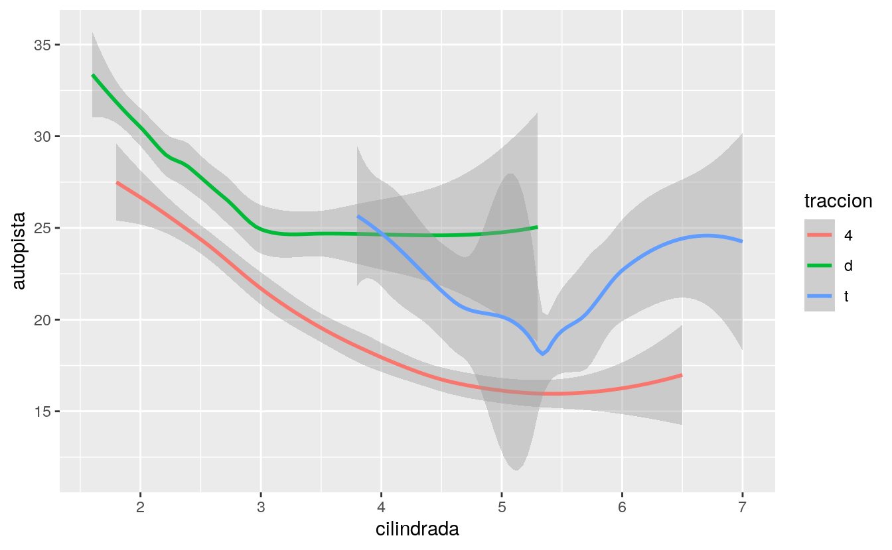
En el capítulo, la leyenda se suprime ya que con tres gráficos, agregar una leyenda al tercero hará que se vea de distinto tamaño.
Dejar los gráficos de distinto tamaño dificulta ver cómo los argumentos cambian la apariencia de los gráficos.
La finalidad de estos gráficos es mostrar la diferencia sin grupos, usando una estética de grupo y usando una estética de color, lo cual crea grupos implícitos.
En el ejemplo, la leyenda no es necesaria ya que buscar los valores asociados a cada valor no ayuda a evidenciar los datos.
- ¿Qué hace el argumento
seengeom_smooth()?
Solución
Agrega las bandas de error estándar a las líneas.
ggplot(data = millas, mapping = aes(x = cilindrada, y = autopista, colour = traccion)) +
geom_point() +
geom_smooth(se = TRUE)
#> `geom_smooth()` using method = 'loess' and formula 'y ~ x'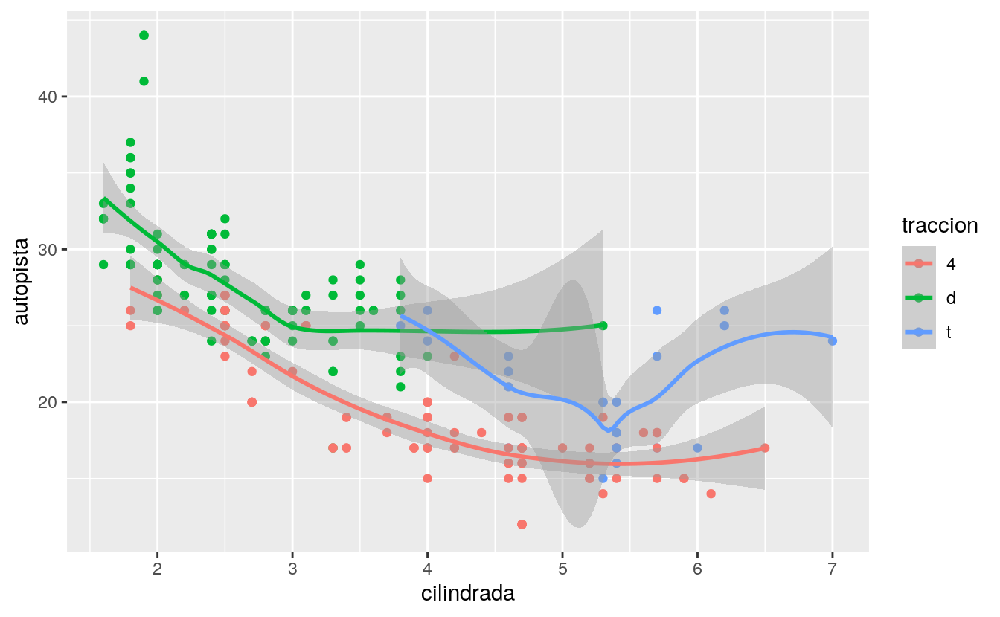
Por defecto la opción es se = TRUE:
¿Se verán distintos estos gráficos? ¿Por qué sí o por qué no?
Solución
No. geom_point() y geom_smooth() toman los datos y estéticas de ggplot(), por lo que no hace falta especificar lo mismo dos veces.
ggplot(data = millas, mapping = aes(x = cilindrada, y = autopista)) +
geom_point() +
geom_smooth()
#> `geom_smooth()` using method = 'loess' and formula 'y ~ x'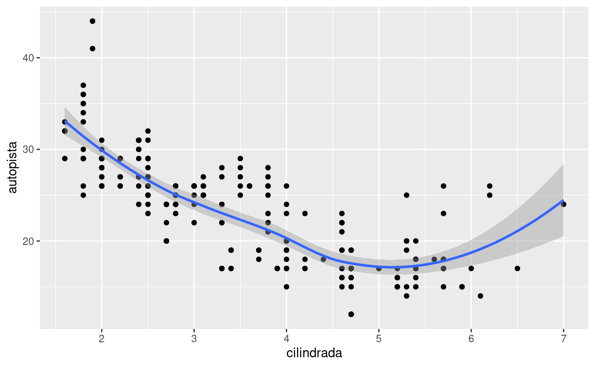
ggplot() +
geom_point(data = millas, mapping = aes(x = cilindrada, y = autopista)) +
geom_smooth(data = millas, mapping = aes(x = cilindrada, y = autopista))
#> `geom_smooth()` using method = 'loess' and formula 'y ~ x'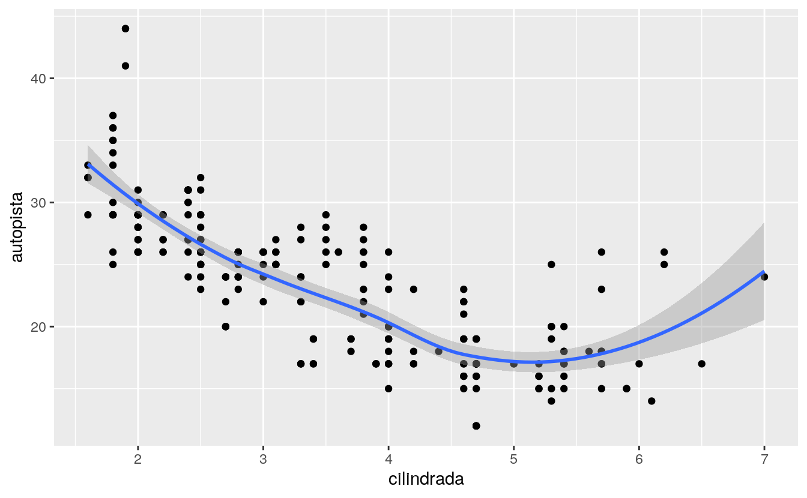
Recrea el código R necesario para generar los siguientes gráficos:
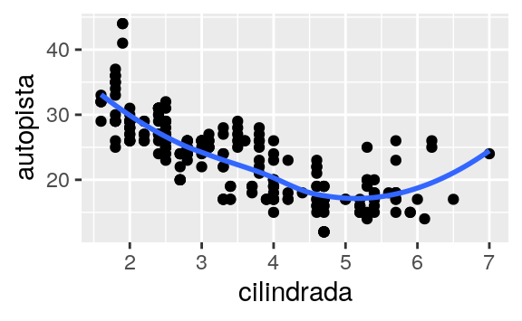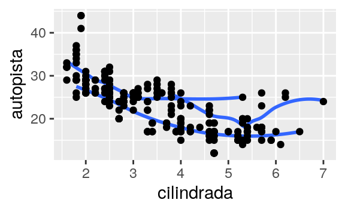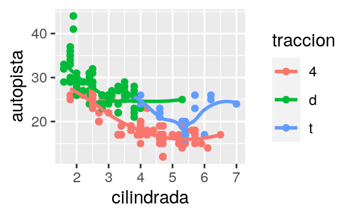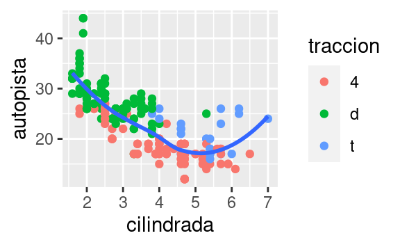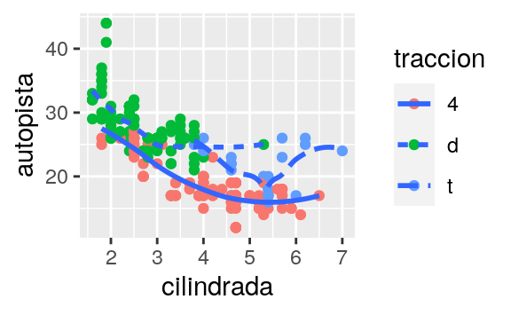

Solución
ggplot(data = millas, mapping = aes(x = cilindrada, y = autopista)) +
geom_point() +
geom_smooth(se = FALSE)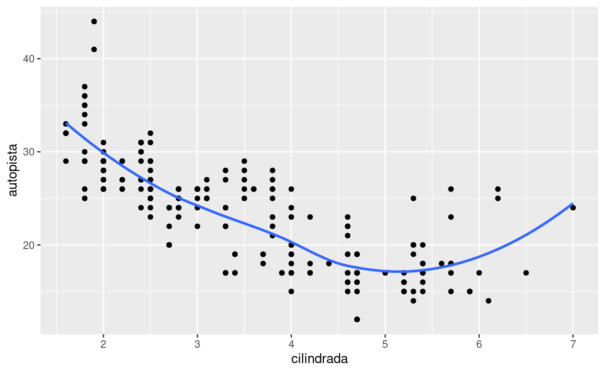
ggplot(data = millas, mapping = aes(x = cilindrada, y = autopista)) +
geom_smooth(aes(group = traccion), se = FALSE) +
geom_point()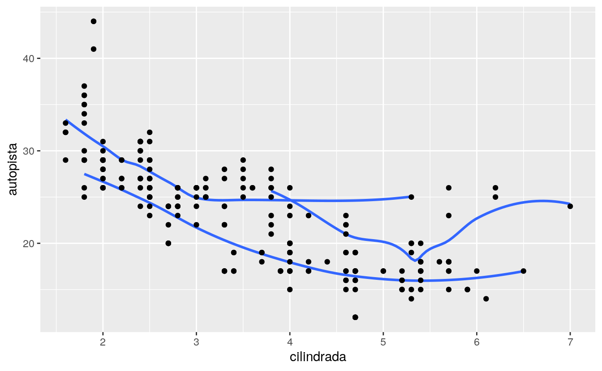
ggplot(data = millas, mapping = aes(x = cilindrada, y = autopista, color = traccion)) +
geom_point() +
geom_smooth(se = FALSE)ggplot(data = millas, mapping = aes(x = cilindrada, y = autopista)) +
geom_point(aes(color = traccion)) +
geom_smooth(se = FALSE)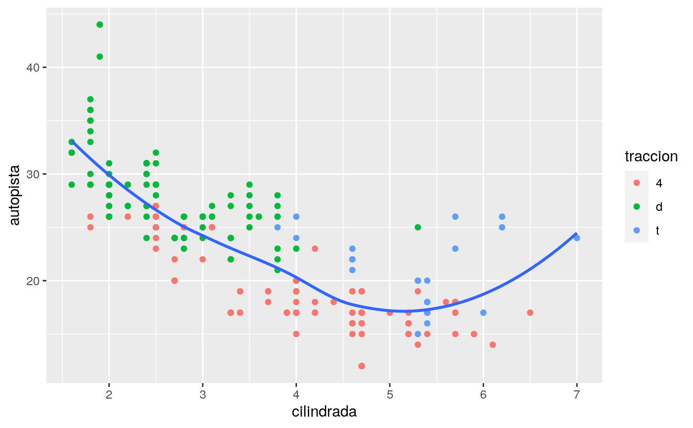
ggplot(data = millas, mapping = aes(x = cilindrada, y = autopista)) +
geom_point(aes(color = traccion)) +
geom_smooth(aes(linetype = traccion), se = FALSE)
#> `geom_smooth()` using method = 'loess' and formula 'y ~ x'
ggplot(data = millas, mapping = aes(x = cilindrada, y = autopista)) +
geom_point(size = 4, colour = "white") +
geom_point(aes(colour = traccion))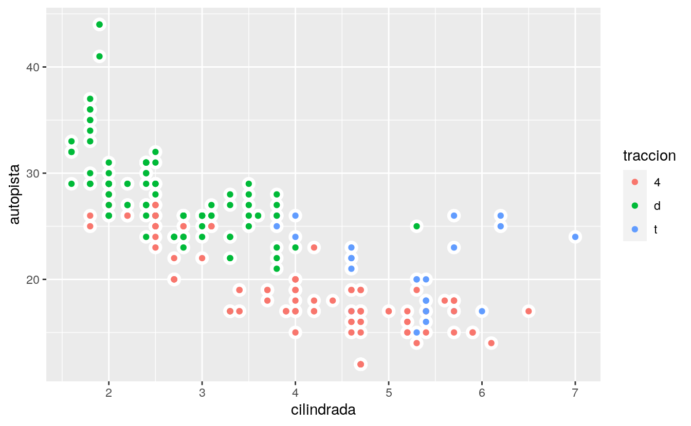
3.7 Transformaciones estadísticas
3.7.1 Ejercicios
- ¿Cuál es el geom predeterminado asociado con
stat_summary()? ¿Cómo podrías reescribir el gráfico anterior para usar esa función geom en lugar de la función stat?
Solución
El gráfico anterior es el siguiente:
ggplot(data = diamantes) +
stat_summary(
mapping = aes(x = corte, y = profundidad),
fun.ymin = min,
fun.ymax = max,
fun.y = median
)
#> Warning: `fun.y` is deprecated. Use `fun` instead.
#> Warning: `fun.ymin` is deprecated. Use `fun.min` instead.
#> Warning: `fun.ymax` is deprecated. Use `fun.max` instead.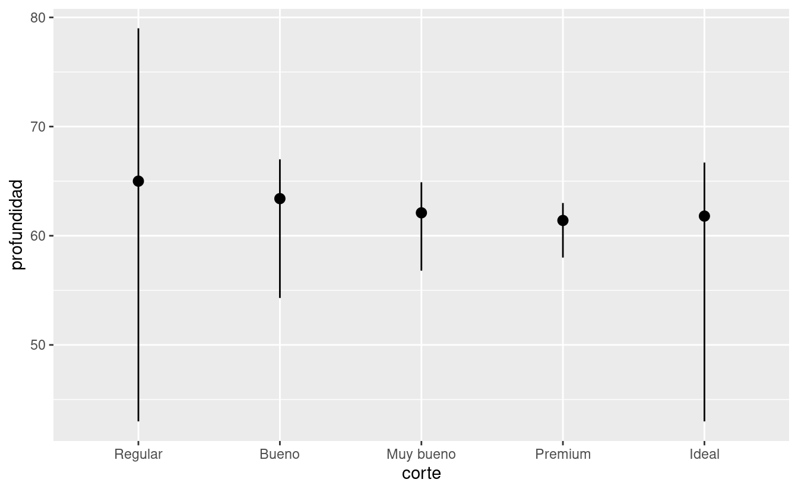
La geometría por defecto para stat_summary() es geom_pointrange().
El estadístico por defecto para geom_pointrange() es identity() pero se puede incluir el argumento stat = "summary" para usar stat_summary() en lugar de stat_identity().
ggplot(data = diamantes) +
geom_pointrange(
mapping = aes(x = corte, y = profundidad),
stat = "summary"
)
#> No summary function supplied, defaulting to `mean_se()`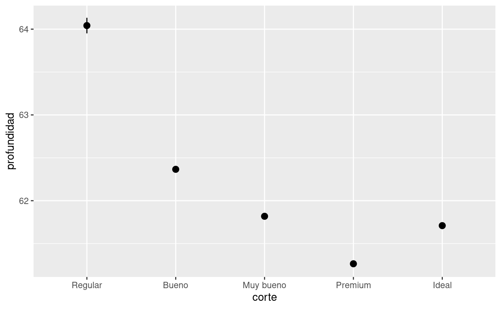
El mensaje resultante en stat_summary() indica que se usó mean y sd para calcular el centro y los extremos de la línea. Sin embargo, en el gráfico original se usaron el máximo y mínimo para los extremos.
Para recrear el gráfico original hay que especificar los valores de fun.ymin, fun.ymax, y fun.y.
- ¿Qué hace
geom_col()? ¿Cómo es diferente ageom_bar()?
Solución
El estadístico por defecto en geom_col() es distinto de geom_bar().
geom_col() usa stat_identity(), que deja los datos sin transformar.
geom_col() espera que los datos contengan los valores de x y los valores de y que representan la altura de las columnas.
geom_bar() usa stat_bin() y espera únicamente los valores de x.
stat_bin(), procesa los datos de entrada y realiza un conteo del número de observaciones para cada valor de x, lo cual genera la variable y internamente.
- La mayoría de los geoms y las estadísticas vienen en pares que casi siempre se usan en conjunto. Lee la documentación y has una lista de todos los pares. ¿Qué tienen en común?
Solución
Las siguiente tabla contienen los pares entre geometrías y estadísticos que se usan en conjunto.
| geometría | estadístico |
|---|---|
geom_bar() |
stat_count() |
geom_bin2d() |
stat_bin_2d() |
geom_boxplot() |
stat_boxplot() |
geom_contour() |
stat_contour() |
geom_count() |
stat_sum() |
geom_density() |
stat_density() |
geom_density_2d() |
stat_density_2d() |
geom_hex() |
stat_hex() |
geom_freqpoly() |
stat_bin() |
geom_histogram() |
stat_bin() |
geom_qq_line() |
stat_qq_line() |
geom_qq() |
stat_qq() |
geom_quantile() |
stat_quantile() |
geom_smooth() |
stat_smooth() |
geom_violin() |
stat_violin() |
geom_sf() |
stat_sf() |
Tabla: Geometrías y estadísticos complementarios
Los nombres tienen a ser similares, por ejemplo geom_smooth() y stat_smooth(), aunque hay casos como geom_bar() y stat_count().
La mayoría de las geometrías usa por defecto el estadístico que le corresponde en la tabla anterior. Recíprocamente, la mayoría de los estadísticos usan por defecto la geometría que le corresponde en la tabla anterior.
Las siguientes tablas contienen las geometrías y estadísticos en ggplot2.
| geometría | estadístico por defecto | documentación conjunta |
|---|---|---|
geom_abline() |
||
geom_hline() |
||
geom_vline() |
||
geom_bar() |
stat_count() |
x |
geom_col() |
||
geom_bin2d() |
stat_bin_2d() |
x |
geom_blank() |
||
geom_boxplot() |
stat_boxplot() |
x |
geom_countour() |
stat_countour() |
x |
geom_count() |
stat_sum() |
x |
geom_density() |
stat_density() |
x |
geom_density_2d() |
stat_density_2d() |
x |
geom_dotplot() |
||
geom_errorbarh() |
||
geom_hex() |
stat_hex() |
x |
geom_freqpoly() |
stat_bin() |
x |
geom_histogram() |
stat_bin() |
x |
geom_crossbar() |
||
geom_errorbar() |
||
geom_linerange() |
||
geom_pointrange() |
||
geom_map() |
||
geom_point() |
||
geom_map() |
||
geom_path() |
||
geom_line() |
||
geom_step() |
||
geom_point() |
||
geom_polygon() |
||
geom_qq_line() |
stat_qq_line() |
x |
geom_qq() |
stat_qq() |
x |
geom_quantile() |
stat_quantile() |
x |
geom_ribbon() |
||
geom_area() |
||
geom_rug() |
||
geom_smooth() |
stat_smooth() |
x |
geom_spoke() |
||
geom_label() |
||
geom_text() |
||
geom_raster() |
||
geom_rect() |
||
geom_tile() |
||
geom_violin() |
stat_ydensity() |
x |
geom_sf() |
stat_sf() |
x |
Tabla: ggplot2 capas de geometrías y sus estadísticos por defecto.
| estadístico | geometría por defecto | documentación conjunta |
|---|---|---|
stat_ecdf() |
geom_step() |
|
stat_ellipse() |
geom_path() |
|
stat_function() |
geom_path() |
|
stat_identity() |
geom_point() |
|
stat_summary_2d() |
geom_tile() |
|
stat_summary_hex() |
geom_hex() |
|
stat_summary_bin() |
geom_pointrange() |
|
stat_summary() |
geom_pointrange() |
|
stat_unique() |
geom_point() |
|
stat_count() |
geom_bar() |
x |
stat_bin_2d() |
geom_tile() |
x |
stat_boxplot() |
geom_boxplot() |
x |
stat_countour() |
geom_contour() |
x |
stat_sum() |
geom_point() |
x |
stat_density() |
geom_area() |
x |
stat_density_2d() |
geom_density_2d() |
x |
stat_bin_hex() |
geom_hex() |
x |
stat_bin() |
geom_bar() |
x |
stat_qq_line() |
geom_path() |
x |
stat_qq() |
geom_point() |
x |
stat_quantile() |
geom_quantile() |
x |
stat_smooth() |
geom_smooth() |
x |
stat_ydensity() |
geom_violin() |
x |
stat_sf() |
geom_rect() |
x |
Tabla: ggplot2 capas de estadísticos y sus geometrías por defecto.
- ¿Qué variables calcula
stat_smooth()? ¿Qué parámetros controlan su comportamiento?
Solución
La función stat_smooth() calcula las siguientes variables:
y: valor predichoymin: menor valor del intervalo de confianzaymax: mayor valor del intervalo de confianzase: error estándar
La sección “Computed Variables” en la documentación de stat_smooth() contiene estas variables.
Los parámetros que controlan stat_smooth() incluyen
method: cuál método utilizarformula: las fórmulas, al igual quemethod, determinan cómo se hará el cálculo del intervalo de confianza y los argumentos adicionales que se requieran.na.rm: si acaso se eliminarán los casos perdidos
En nuestro gráfico de barras de proporción , necesitamos establecer
group = 1. ¿Por qué? En otras palabras, ¿cuál es el problema con estos dos gráficos?
Solución
Si no se incluye group = 1, todas las baras en el gráfico tendrán altura 1.
La función geom_bar() asume que los grupos son iguales a los valores de x dado que el estadístico realiza un conteo dentro de los grupos.
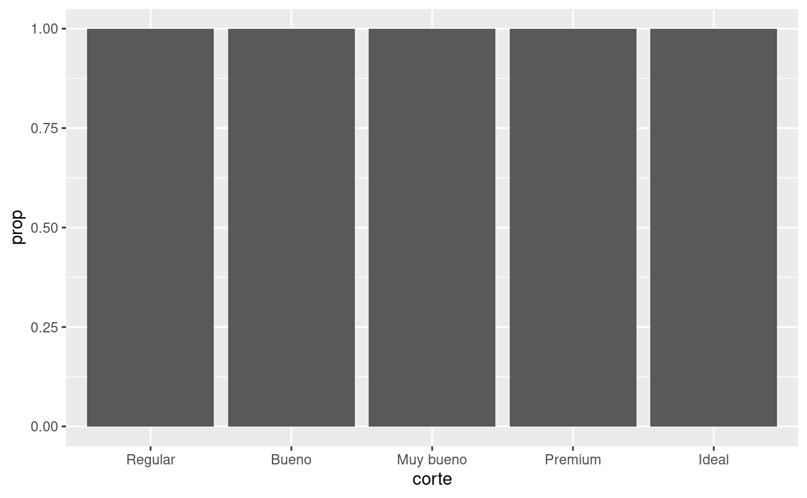
El problema con estos gráficos es que las proporciones se calculan dentro de los grupos.
ggplot(data = diamantes) +
geom_bar(mapping = aes(x = corte, y = ..prop..))
ggplot(data = diamantes) +
geom_bar(mapping = aes(x = corte, fill = color, y = ..prop..))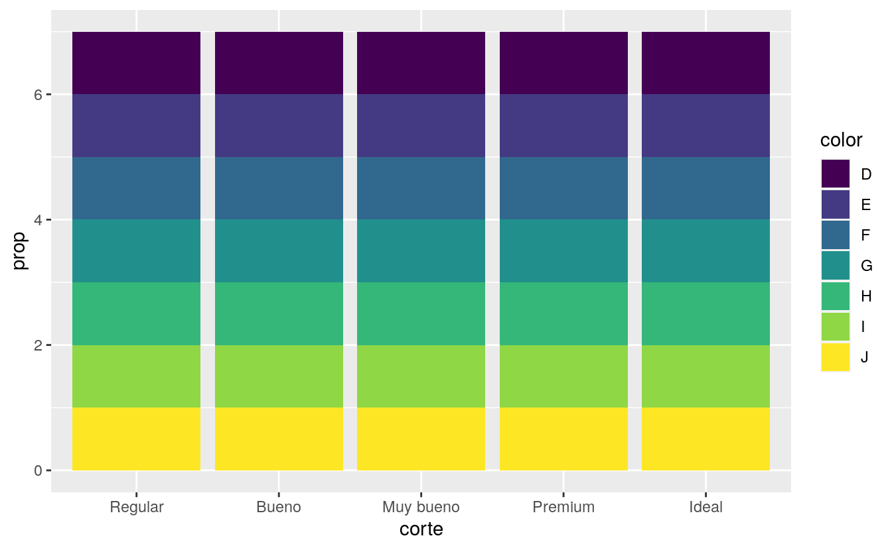
El siguiente código generará el gráfico buscado sin relleno.
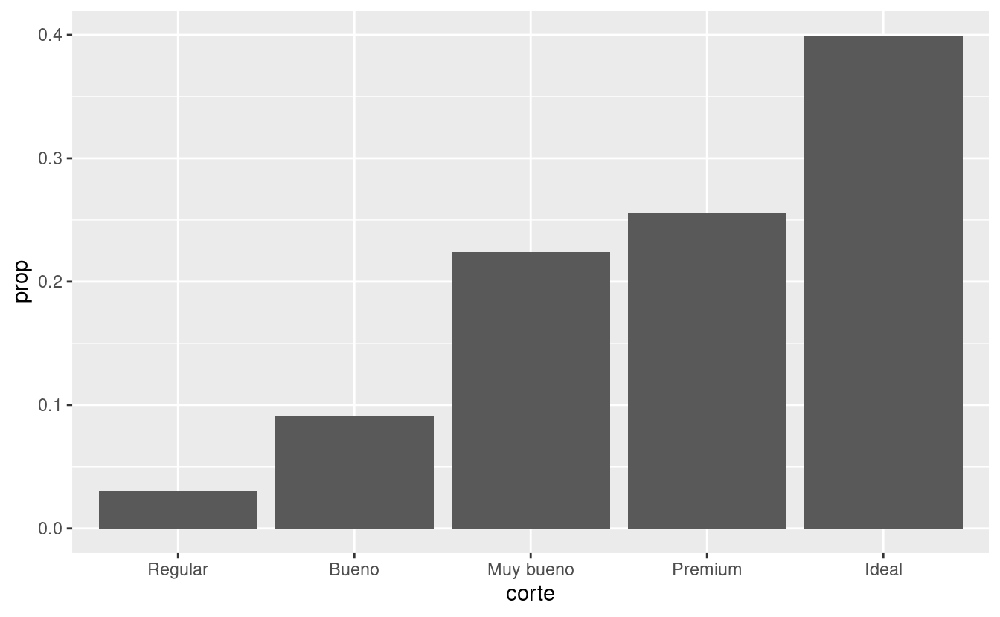
Con el argumento fill, es necesario normalizar las barras.
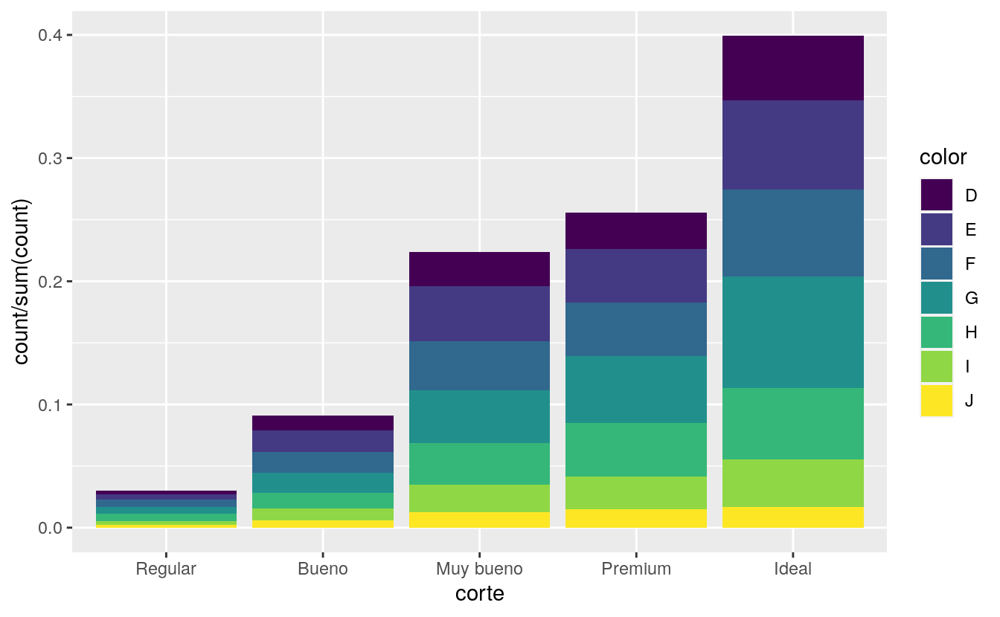
3.8 Ajustes de posición
3.8.1 Ejercicios
¿Cuál es el problema con este gráfico? ¿Cómo podrías mejorarlo?
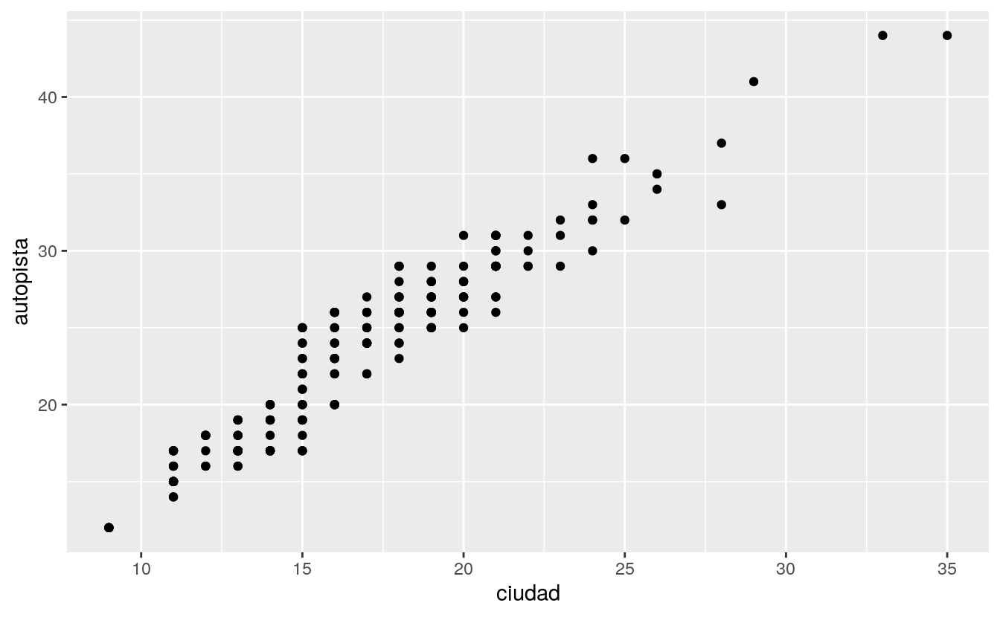
Solución
Existe superposición ya que hay múltiples observaciones para cada combinación de ciudad y autopista.
Se puede mejorar el gráfico usando el argumento de distorsión y así reducir la superposición.
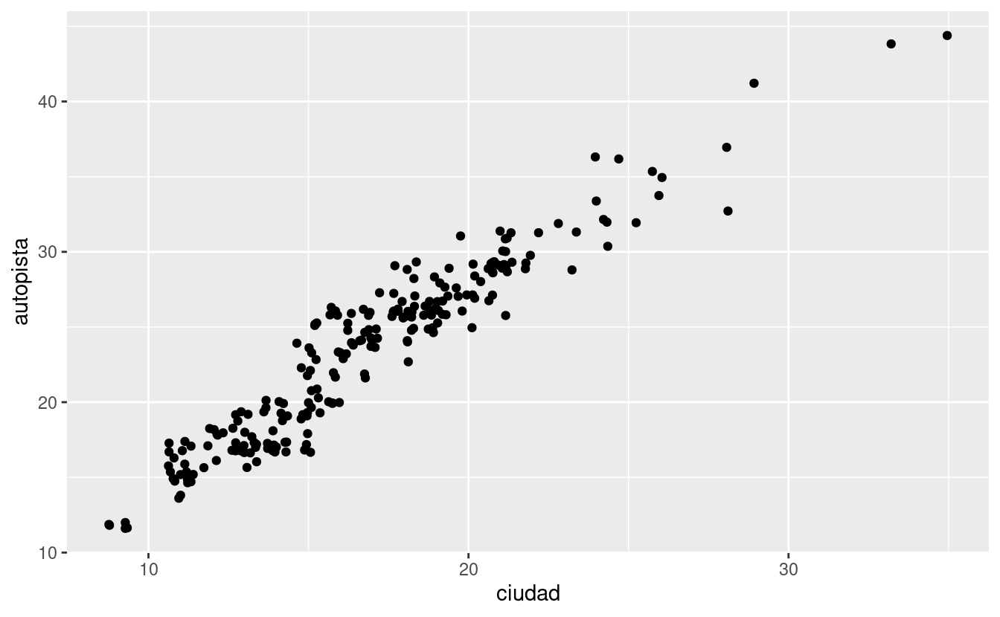
La relación entre ciudad y autopista es clara, incluso sin el argumento de distorsión, que en este caso deja en claro donde se concentran las observaciones.
- ¿Qué parámetros de
geom_jitter()controlan la cantidad de ruido?
Solución
A partir de la documentación de geom_jitter(), existen dos argumentos:
widthcontrola el desplazamiento verticalheightcontrola el desplazamiento horizontal
Los valores por defecto de width y height introducen ruido en ambas direcciones.
Así se ve el gráfico con las opciones por defecto.
ggplot(data = millas, mapping = aes(x = ciudad, y = autopista)) +
geom_point(position = position_jitter())Con width = 0 se elimina la distorsión horizontal.
Con width = 20 se agrega mucha distorsión.
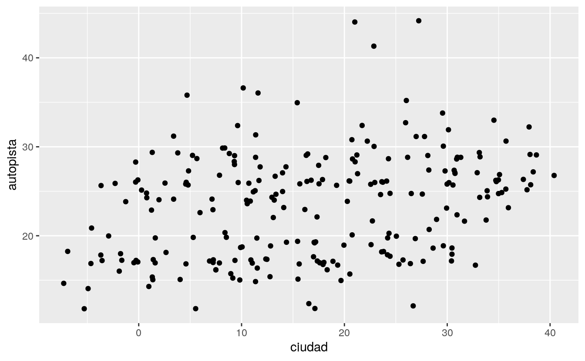
Es análogo para height.
Hay que notar que width y height se expresan en las mismas unidades que los datos, por lo que height = 1 o width = 1 corresponden a diferentes valores relativos de distorsión dependiendo de las escalas de x e y.
Los valores por defecto son 80% de la resolución (resolution()) de los datos. Cuando x e y son discretas, su resolución es igual a uno, y los valores por defecto son height = 0.4 y width = 0.4 ya que la distorsión mueve los puntos en dirección positiva y negativa.
- Compara y contrasta
geom_jitter()congeom_count()
Solución
geom_jitter() agrega una variación al azar a los puntos del gráfico, es decir que distorsiona la ubicación de los puntos en el gráfico. Este método reduce la superposición ya que es poco probable que al mover los puntos al azar estos queden en la misma ubicación. Sin embargo, el problema de reducir la superposición es que se distorsionan los valores mostrados de x e y.
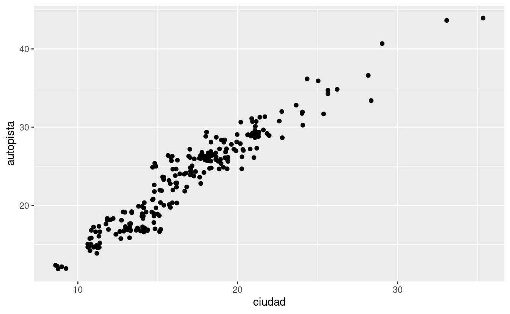
geom_count() cambia el tamaño de los puntos relativo a la cantidad de observaciones. Las combinaciones de x e y con más observaciones tendrán un mayor tamaño. Esto no distorsiona los valores, pero tiene el problema de que el tamaño de los puntos puede generar superposición si los puntos son cercanos.

Por ejemplo, geom_count() puede ser menos legible que geom_jitter() si se agrega un argumento de color.
ggplot(data = millas, mapping = aes(x = ciudad, y = autopista, color = clase)) +
geom_jitter()
ggplot(data = millas, mapping = aes(x = ciudad, y = autopista, color = clase)) +
geom_count()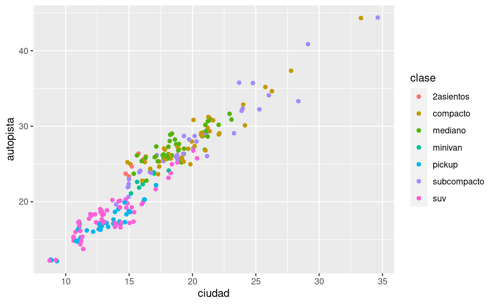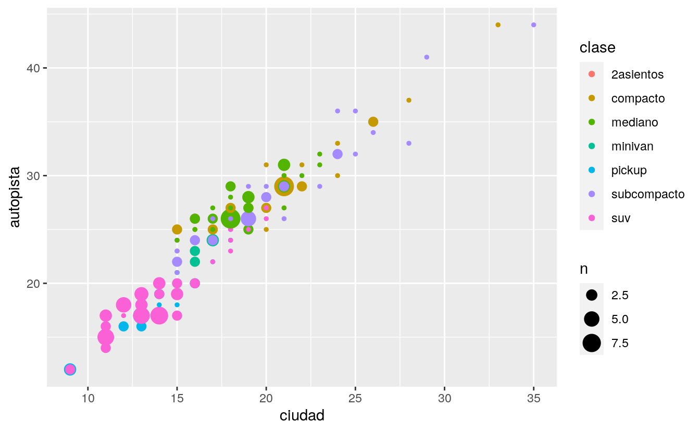
Este ejemplo muestra que no existe una solución universal. El coste y beneficio de cada enfoque depende de la estructura de los datos y del objetivo.
- ¿Cuál es el ajuste de posición predeterminado de
geom_boxplot()? Crea una visualización del conjunto de datos demillasque lo demuestre.
Solución
La posición por defecto para geom_boxplot() es "dodge2", que es un atajo de position_dodge2.
Este ajuste no cambia la posición vertical pero mueve las geometrías horizontalmente para evitar la superposición.
Consulta la documentación de position_dodge2() para los detalles específicos.
Si agregamos colour = clase a un diagrama de cajas, los niveles de transmision se ubican lado a lado.
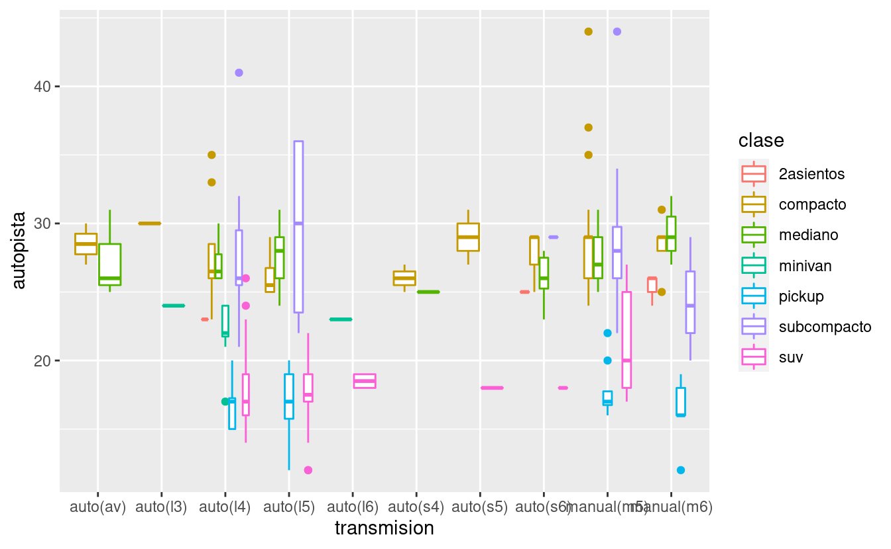
Si se usa position_identity() habrá superposición.
ggplot(data = millas, aes(x = transmision, y = autopista, colour = clase)) +
geom_boxplot(position = "identity")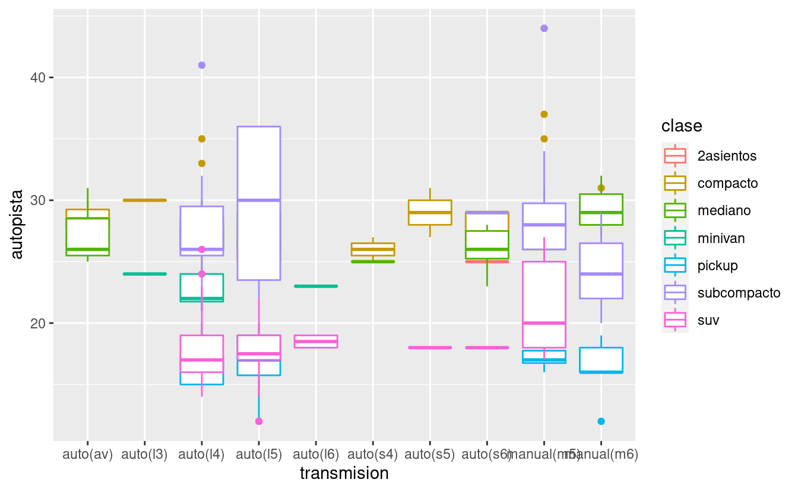
3.9 Sistemas de coordenadas
3.9.1 Ejercicios
- Convierte un gráfico de barras apiladas en un gráfico circular usando
coord_polar().
Solución
Un gráfico de torta es un gráfico de barras aplicadas con la adición de coordenadas polares.
Partamos del siguiente ejemplo:
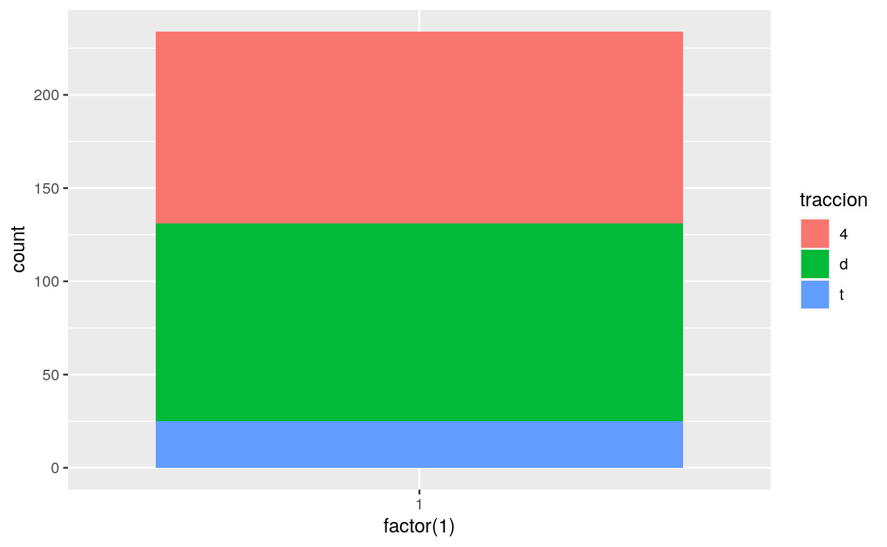
Ahora agregamos coord_polar(theta="y") para crear el gráfico de torta:
ggplot(millas, aes(x = factor(1), fill = traccion)) +
geom_bar(width = 1) +
coord_polar(theta = "y")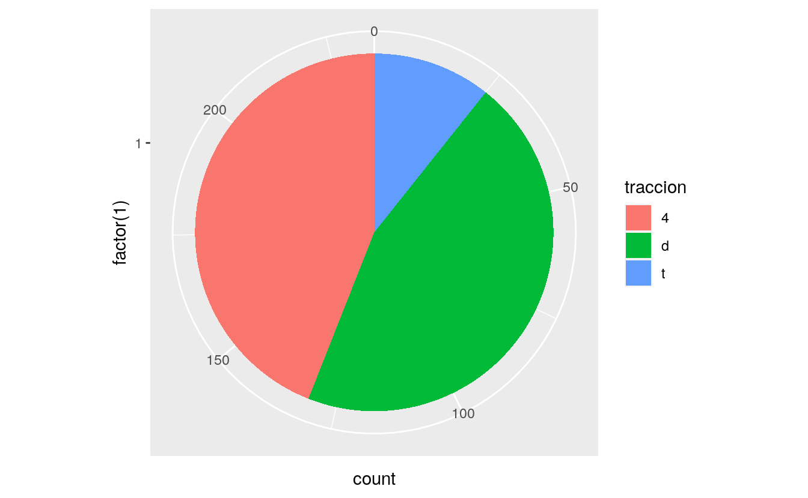
El argumento theta = "y" transforma y en el ángulo de cada sección.
Si coord_polar() se especifica sin theta = "y", el resultado se llama “ojo de buey”.
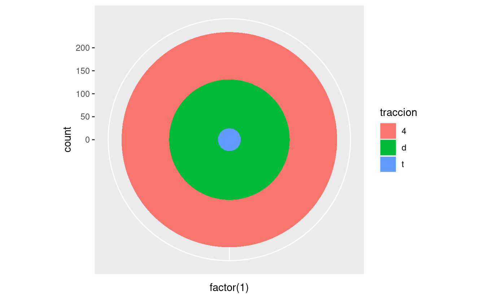
- ¿Qué hace
labs()? Lee la documentación.
Solución
labs agrega los títulos de los ejes, título del gráfico y la leyenda.
ggplot(data = millas, mapping = aes(x = clase, y = autopista)) +
geom_boxplot() +
coord_flip() +
labs(y = "Millas por Galón en Autopista",
x = "Clase",
title = "Millas por Galón en Autopista por Tipo de Vehículo",
subtitle = "1999-2008",
caption = "Fuente: http://fueleconomy.gov")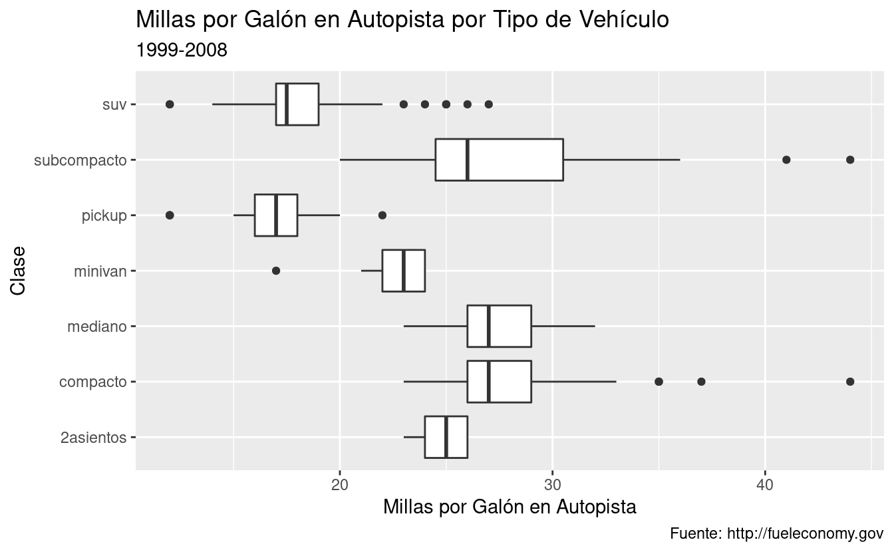
labs() no es la única función para agregar títulos. xlab(), ylab() y ggtitle() realizan la misma función.
- ¿Cuál es la diferencia entre
coord_quickmap()ycoord_map()?
Solución
coord_map() usa una proyección cartográfica para proyectar la Tierra sobre una superficie bidimensional. Por defecto usa la Proyección de Mercator, la cual se aplica a todas las geometrías del gráfico.
coord_quickmap() usa una aproximación más rápida que ignora la curvatura de la tierra y ajusta de acuerdo a la razón de latitud y longitud. Esta es una alternativa computacionalmente más rápida que no genera la necesidad de transformar las geometrías individuales.
Consulta coord_map() para la documentación y ejemplos.
¿Qué te dice la gráfica siguiente sobre la relación entre la ciudad y la
autopista? ¿Por qué escoord_fixed()importante? ¿Qué hacegeom_abline()?ggplot(data = millas, mapping = aes(x = ciudad, y = autopista)) + geom_point() + geom_abline() + coord_fixed()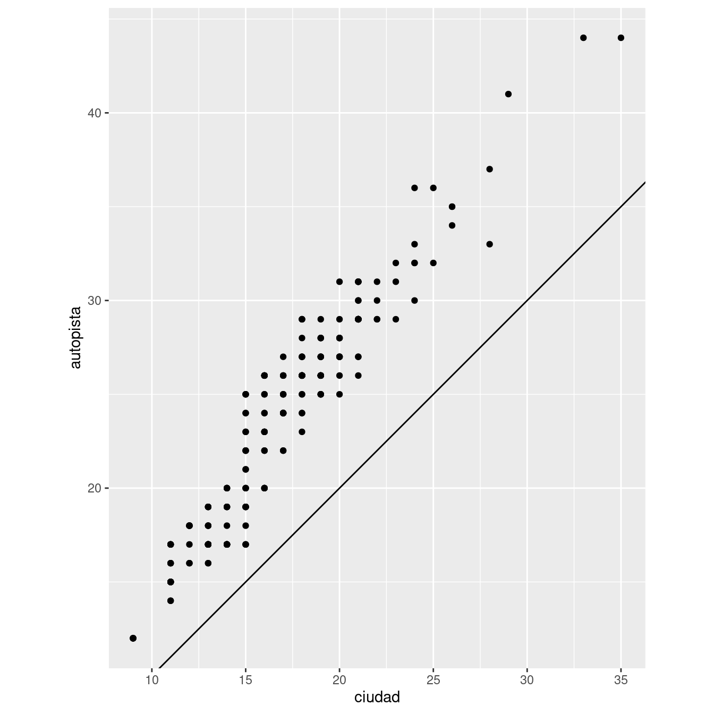
Solución
La función coord_fixed() asegura que la línea que genera geom_abline() tenga un ángulo de 45 grados. De este modo es más fácil comparar a partir de los casos en que los rendimientos en autopista y ciudad son iguales.
ggplot(data = millas, mapping = aes(x = ciudad, y = autopista)) +
geom_point() +
geom_abline() +
coord_fixed()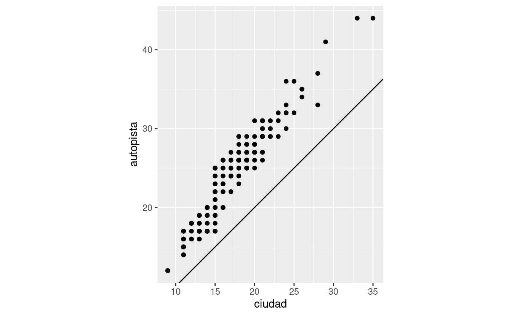
Lo que podemos ver es que en todos los modelos el rendimiento en autopista es superior al rendmiento en ciudad.